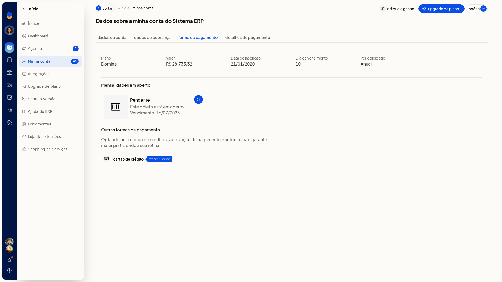
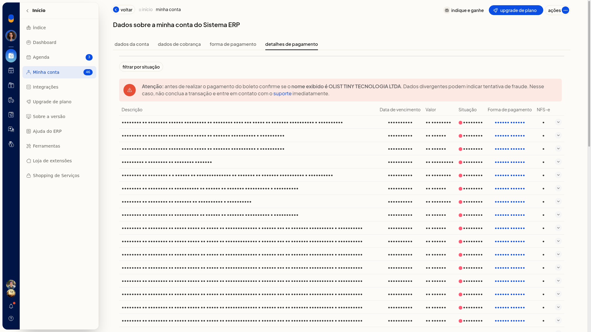

Mensalidade: forma de pagamento, boleto e nota fiscal
Na aba Forma de pagamento, em Início > Minha conta, você consulta como a mensalidade do ERP da Olist é cobrada. A tela mostra o plano, o valor, a data de inscrição, o dia de vencimento, a periodicidade e a forma de pagamento atual.
Você também vê a opção de outra forma de pagamento, filtra as cobranças, baixa o boleto quando o botão existe e confere a nota fiscal de serviço na coluna NFS-e.
Pré-requisitos
- No plano Conta Digital da Olist, as abas de pagamento não ficam disponíveis.
- Se a aba Forma de pagamento não aparecer, peça acesso ao administrador da conta.
Importante
- Para trocar para Cartão de Crédito, a opção só aparece quando a forma de pagamento atual não é cartão de crédito.
- Para trocar para Boleto, a opção só aparece quando a forma atual não é boleto.
- No plano Mastercard, a opção Boleto não aparece para troca da forma de pagamento.
- A opção PayPal só aparece quando a forma de pagamento atual já é PayPal.
Instruções
-
Acesse Início > Minha conta.
-
Abra a aba Forma de pagamento.
-
Confira o plano, o valor, a data de inscrição, o dia de vencimento, a periodicidade e a forma de pagamento atual.

-
Use a outra opção exibida na tela para trocar a forma de pagamento.
-
Abra Detalhes de pagamento.
-
Filtre por situação, como pagas ou pendentes. Para remover o filtro, clique em Limpar filtros.

-
Clique em baixar boleto ou imprimir na cobrança, quando o botão existir, e confira a coluna NFS-e.
Resultado
Você entende como a mensalidade é cobrada, localiza o boleto quando o botão está disponível e vê se há NFS-e na cobrança.
Informações adicionais
A tela de upgrade também mostra a forma de pagamento
Em Início > Upgrade de plano, você confere o plano atual, o valor, a periodicidade, a forma de pagamento e a opção Alterar pagamento.